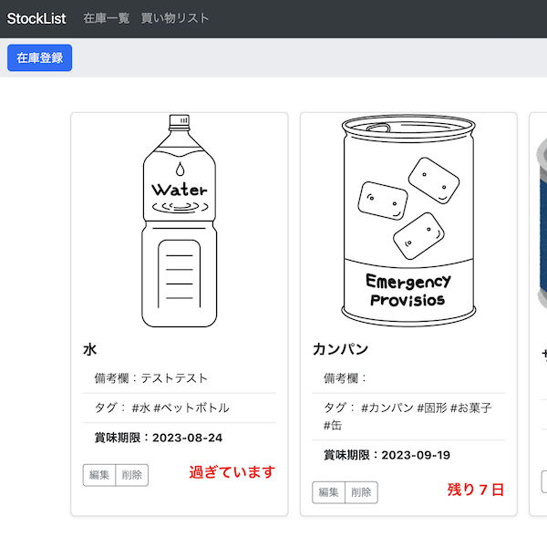

Stock List（非常食の賞味期限管理アプリ）
開発環境
Ruby / Ruby on Rails / MySQL / bootstrap / GitHub / Render / Visual Studio Code
-
概要
制作時間 約40時間 URL https://stock-list-8b54.onrender.com/ ID stolis PASS 1111 -
動作テスト
テスト用アカウント
mail test@mail.com PASS 111111
OUTLINEアプリケーションの概要
非常食の賞味期限を管理できるアプリケーションです。
主な機能は、賞味期限の在庫登録や一覧表示機能、および買い物リスト機能、タグ付け機能、検索機能です。
トップページにはこのWEBアプリの機能の説明を記載。ユーザー登録を行い、メニューの在庫一覧をクリックすることで、登録した非常食の在庫一覧が表示されます。
賞味期限を登録するとカウントダウンが始まり、賞味期限より1カ月前、1週間前、当日に、登録したメールアドレスに通知が来ます。
また、賞味期限を消費後、ローリングストックができるように追加する非常食の買い物リスト機能を実装しました。
-
開発に至った経緯
水害などの災害のニュースが多い昨今、不定期でふと思い出した時に非常食の確認すると賞味期限がすでに切れているということがしばしばありました。
非常食なのに、賞味期限切れによって使えなくなってしまう課題を解決するため、非常食の賞味期限を管理するアプリケーションを作成することにいたしました。
-
開発で工夫したこと
在庫一覧に非常食を写真付きで登録することにより、一目でどのような非常食があるのかをわかりやすくしました。
賞味期限が切れる１週間前はカウントダウンの文字を赤く表示し目立たせています。
また、タグを付けることによって整理、検索しやすくなると考え、登録の際にタグを複数入力できるようになっています。
(Renderの仕様により、画像は一定時間が経つとリンク切れになります。解決のために勉強中です)
-
今後実装したいと思っていること
LINEでユーザー登録できる機能と、LINEで通知できる機能の実装を考えています。
LINEが普及した昨今では、メールは全く使わないという人を度々見かけます。LINEなら通知を見るという人のために実装したいと考えています。